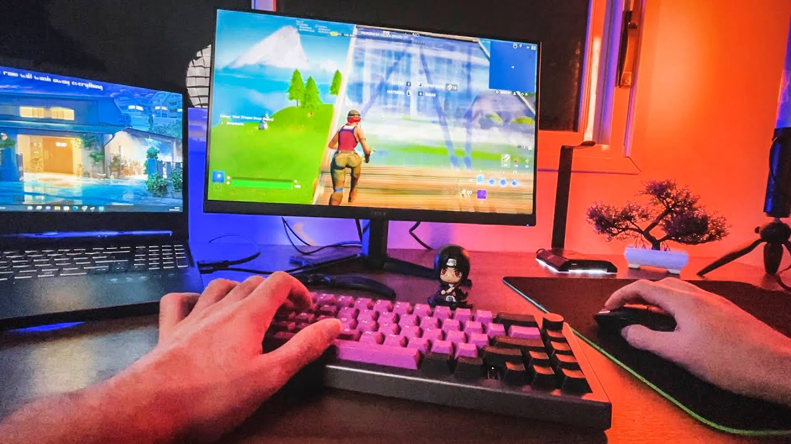
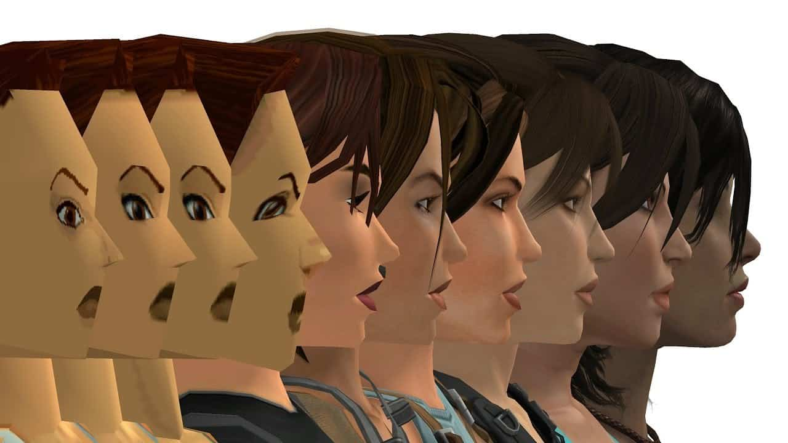

Tudo sobre o universo gamer

Jogos eletrônicos, ou videogames, são uma forma de entretenimento interativo que existe desde a década de 1970. Desde os primeiros jogos como Pong e Space Invaders, a indústria cresceu muito e hoje movimenta bilhões no mundo inteiro.
Hoje em dia, jogar não é só diversão. Muita gente trabalha com isso, seja como streamer, jogador profissional de e-sports ou desenvolvedor de jogos. É uma área que só cresce e oferece várias oportunidades.
Os jogos conseguem juntar várias coisas legais: histórias envolventes, gráficos bonitos, desafios e a possibilidade de jogar com amigos. Não é à toa que mais de 3 bilhões de pessoas jogam algum tipo de jogo eletrônico no mundo.

Lá nos anos 70 e 80, os jogos eram bem simples, com gráficos em pixel e som bem básico. Mas com o passar do tempo, os consoles foram ficando mais potentes. O Atari deu lugar ao Super Nintendo, que deu lugar ao PlayStation, e assim por diante.
Hoje temos consoles como o PlayStation 5 e o Xbox Series X, além dos PCs gamers que são verdadeiras máquinas. Os gráficos chegaram num nível que parece quase real, e as histórias dos jogos rivalizam com filmes e séries.
Se você quer saber mais sobre jogos, sugestões de alguns sites: